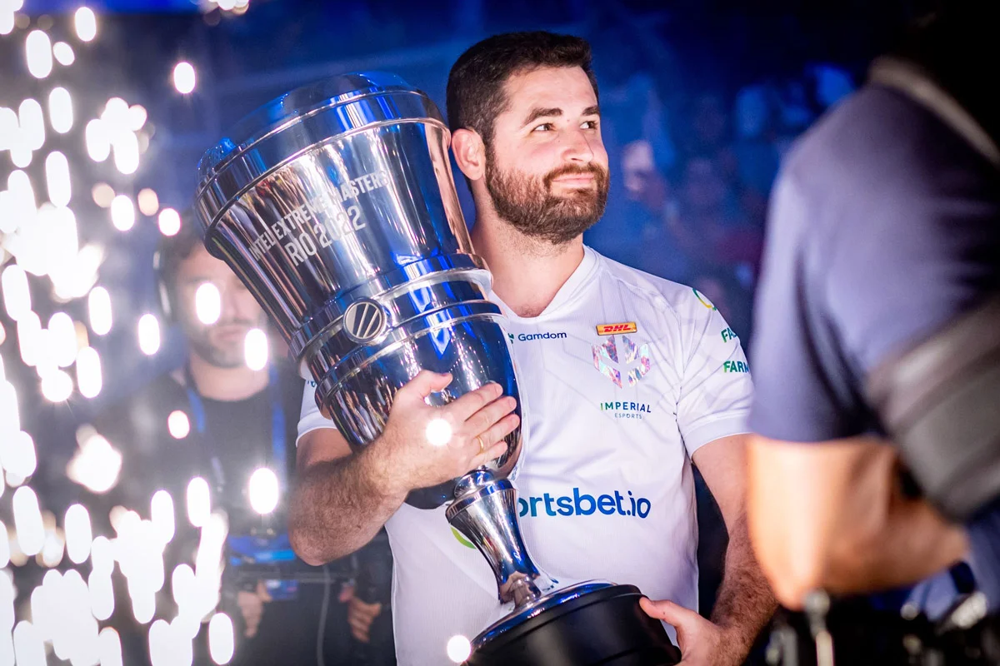

IEMRio 2024
Retornando para o Brasil e Rio de Janeiro pelo terceiro ano consecutivo, o Intel Extreme Masters terá os melhores 16 times junto com os milhares de fãs apaixonados na Farmasi Arena! A torcida fervorosa da multidão Brasileira, diversas atividades e um fim de semana de muito Counter-Strike é algo que você não quer perder! Garanta seus ingressos agora e presencie quem vai se tornar o campeão do IEM Rio em 2024.
